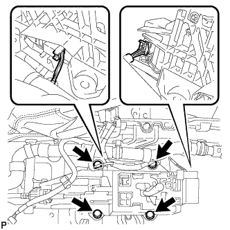

РЫЧАГ ПЕРЕКЛЮЧЕНИЯ ПЕРЕДАЧ > СНЯТИЕ |
| 1. СНИМИТЕ ВЕЩЕВОЙ ЯЩИК В ОБЛИЦОВКЕ ТУННЕЛЯ ПОЛА В СБОРЕ |
Снимите вещевой ящик в облицовке туннеля пола в сборе (Нажмите здесь).
| 2. СНИМИТЕ ВЕЩЕВОЙ ЯЩИК В ОБЛИЦОВКЕ ТУННЕЛЯ ПОЛА В СБОРЕ (для моделей с холодильной камерой) |
Снимите вещевой ящик в облицовке туннеля пола (Нажмите здесь).
| 3. ОТСОЕДИНИТЕ ТРОС МЕХАНИЗМА ПЕРЕКЛЮЧЕНИЯ ПЕРЕДАЧ В СБОРЕ |
Установите рычаг переключения передач в положение N.
 |
Отсоедините конец троса механизма переключения передач от рычага переключения передач.
 |
Поверните разъем примерно на 180° против часовой стрелки и, зафиксировав гайку в таком положении, отсоедините трос механизма переключения передач от держателя рычага переключения передач.
| 4. СНИМИТЕ НАПОЛЬНЫЙ МЕХАНИЗМ ПЕРЕКЛЮЧЕНИЯ ПЕРЕДАЧ В СБОРЕ |
|  |
Отсоедините 2 разъема.
Выверните 4 болта и снимите напольный механизм переключения передач.